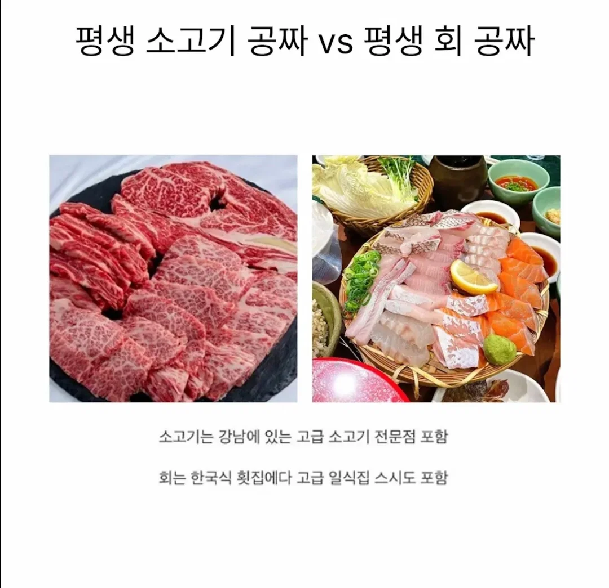

이거 좀 궁금함

이거 좀 궁금함
회를 진짜 좋아하는데 회 너무자주먹으면 물림
쇠고기는 남들이 많이먹으면 물린다던데 난 안물려서 전자 ㅎㅎ
삼촌이 한우 정육점 하셔서 진짜 소고기란 소고기는 좆 빠지게 많이 먹어봤는데 내 입에는 돼지가 제일 맛있음 근데 회가 더 좋음
소고기…ㅠ
당연하게 소고기.
소고기로 할 수 있는 요리 가짓수가 회로 할 수 있는 요리보다 훨 많음.
난 소
회, 초밥은 먹으면 윗배가 아픔
소고기를 이길 수 없다
현실은 고급 소고기 집은 스끼로 회가 나오고 고급 오마카세가면 소고기를 스끼로 준다...
뭔 상관임ㅋㅋㅋ
뭔말이야 이게
소고기는 고점이 어느정도 비슷한데 회는 고점이 진짜 없음. 숙성회도 그렇고 활어회도 그렇고 괜히 영화에서 검사님들이 맨날 일식집가서 회먹는거 나오는게 아님 비싼횟집은 차원이 달라요
소고기는 비싸봐야 한우인데 회 비싼건 널림 ㅋㅋ
ㄹㅇ비싸봐야 어차피 자연산 아님ㅋㅋㅋ회는 평생 구경도 못하는것들 넘쳐남 그치만 난 소고기할래..
요리가짓수만 봐도 닥후가 승...회 종류도 수백가지일테고
이유식 고려시 전자가 찢음
소고기
일반적인 가정식이나 외식중에서
회보다 소고기로 먹는 바리에이션이 더 넓음
회는 익히지않은 날것에 한정된거지만 소고기는 그냥 식재료니까
생선구이나 생선찜, 매운탕은 회가 아니잖아
소고기 물림 난 소고기보다 닭고기가 좋더라
소고기가 최고라는건 뭔가 가격이 비싸니깐 사람들 인식에 덧씌워진게 아닐까 생각한 적도 있음
육회도 공짜임?
소고기 질림. 무조건 회
난 소고기
해산물 싫어하는 사람도 꽤 있어서 소고기 많긴할듯?
무조건 회지 이건 비교 레벨이 아닌데;; 소 어차피 많이도 못먹음. 회가 그리고 가격이 안드로메다로 가는 어종도 상당히 많은데 소가 비빌 그게 아닌디. 해산물 싫어하는 사람이 많긴한갑네
소고기 생으로 육회해쳐 먹으면 비타민 영양도 와따~~
이거는 회지 ㅅㅂ 얼마나 다양한디
ㄹㅇ 소고기가 아니라 고기라면 고민했음
소기름 안좋아
소 매일못먹겠음
평생 날것만 먹고 살거냐고
간만에 ㅈㄴ 어렵네
소고기 빨리 물릴꺼같음
백날 골라봐라 평생은 무슨 주변에 1주일 동안이라도 사준다는 사람 하나 없을 놈들이 절반이상일건데 ㅋㅋㅋ
소고기도 투쁠등심만 있는게 아니고 육회나 육사시미로 먹을수 있고 조리해서 먹어도 되는데 닥전이지
"소" 한 종류잖슴. 뭐 우유짜는 소 먹을것도 아닐테고 기껏해야 송아지가 별미이려나 ㅋㅋ "회" 는 이미 물고기가 안 정해져 있는거에서 끝났음
나 통풍이라 회
내가 미식가였으면 회 했을 거 같은데
운동하고 먹을거라 소고기
회
난 이제 회 아예 안먹음.
전자현미경 유튜버가 회 수십점 가져다가 들여다봤더니... 어후...
그냥 기생충 입에 쑤셔넣는거임.
그래서 내소고기 어디감??
돼지,딝 포함이 아닌 소고기만 먹고 싶어서 돈 들여 먹는일은 별로 없고 회,초밥은 먹고 싶은데 비싸서 매일 못먹는 일이 많아서 회 할래
모든 육고기 vs 모든 물고기
이렇게 해야 밸런스 맞음
소고기 1개론 안됨
애초에 회를 별로 안좋아함
예전엔 소가 좋았는대 이젠 마블링 높은건 건강상이나 키우는거 생각해서 많이 못먹겟더라. 회에 한표,,.
소고기집이 강남 한정이면 회가 고점이 높을거 같다.
일식집 스시 포함이면 후자가 더 낫지 않나?
뭐가 더 비싸고 고점 높고 그런건 모르겠고
그냥 소고기가 더 맛있음
회 못먹으니 소고기
소고기 할래 회는 식중독 무서워
둘다 물림...돼지고기는 없음?
난 어릴때 아토피가 심했던 편이라 육고기는 잘 안먹음.
난 둘 다 돈내고 먹는데 왜 갑자기 공짜로 주는 것?
고기좋아하는 사람은 살쪘고 회 좋아하는사람은 말랐다
다 그런건 아니겠지만 대부분 그렇지